Problem
Determine the area of each of the four shapes below. In order to find the area, you may divide each shape up into other shapes in any way you need to.
Note: All linear measures are in cm. Shape 1 has a vertical line of symmetry, Shape 2 has a horizontal line of symmetry, and Shape 3 has both a horizontal and a vertical line of symmetry. All angles in Shape 3 are right angles.
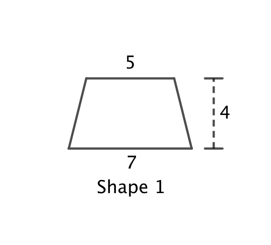 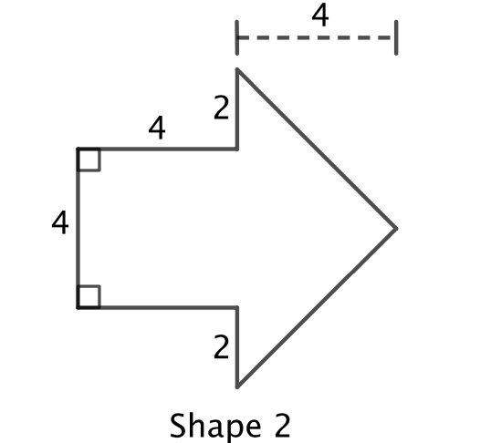
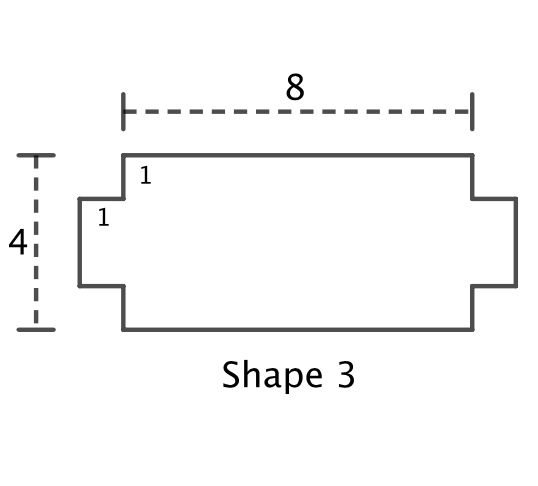 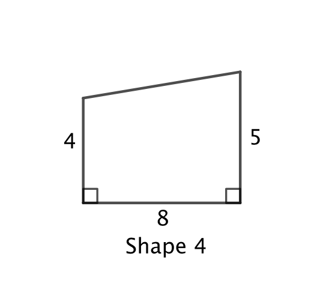
Solution
Shape 1:
Solution 1: Divide the shape into two right-angled triangles and a rectangle, as shown.
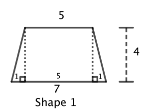
Since there a vertical line of symmetry, the base of each triangle is \(\frac{7-5}{2}=1.\) So each triangle has area \(\frac{1\times 4}{2} = 2\).
The rectangle has dimensions 5 by 4, and so its area is \(5\times 4 = 20\).
Therefore, the area of Shape 1 is \(2 + 2 + 20 = 24\mbox{ cm}^2\).
Solution 2: Divide the shape into two triangles, as shown.
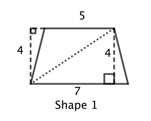
The bottom triangle has a base of 7 and a height of 4, so the area of this triangle is \(\frac{7\times 4}{2} = 14\).
The top triangle has a base of 5 and a height of 4. (You may have to turn the page upside down to see this.) So the area of this triangle is \(\frac{5\times 4}{2} = 10\).
Therefore, the area of Shape 1 is \(14 + 10 = 24\mbox{ cm}^2\).
Shape 2:
Divide the shape into a square and a triangle, as shown.
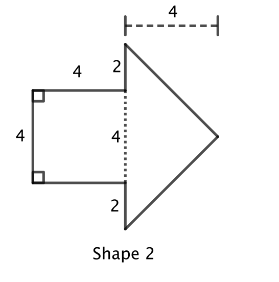
The square has a side length of 4, so the area of the square is \(4\times 4 = 16\).
The triangle has base \(2+4+2=8\) and height 4, so the area of the triangle is \(\frac{8\times 4}{2} = 16\).
Therefore, the area of Shape 2 is \(16 + 16 = 32\mbox{ cm}^2\).
Shape 3:
Solution 1: Divide the shape into three rectangles, vertically, as shown to the right.
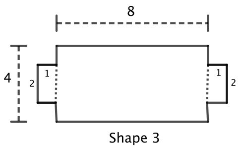
Each side rectangle has length \(4 -1 -1 =2\) and width 1, so the area of each side rectangle is \(2\times 1 = 2\).
The middle rectangle has the dimensions of 8 by 4, so its area is \(8\times 4 = 32\).
Therefore, the area of Shape 3 is \(2 + 2 + 32 = 36\mbox{ cm}^2\).
Solution 2: Divide the shape into three rectangles, horizontally, as shown.
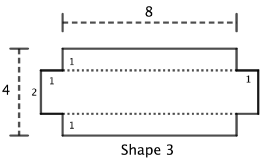
The top and bottom rectangles have the dimensions of 1 by 8, so the area of each is \(1\times 8 = 8\).
The length of the middle rectangle is \(8+ 1 + 1 = 10\) and its width is \(4 - 1- 1 = 2\), so the middle rectangle has area \(10\times 2 = 20\).
Therefore, the area of Shape 3 is \(8 + 8 + 20= 36\mbox{ cm}^2\).
Solution 3: Divide the shape into one rectangle with four 1 by 1 corners removed, as shown.
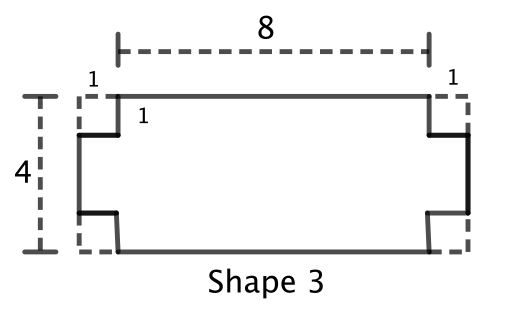
The large rectangle has a length \(8 + 1 + 1 = 10\) and width is 4, so its area is \(10\times 4 = 40\). Each of the corner squares has dimensions of 1 by 1, so area \(1\times 1 = 1\).
Therefore, the area of Shape 3 is \(40 - 4 \times 1 = 36\mbox{ cm}^2\).
Shape 4:
Solution 1: Divide the shape into a rectangle and a triangle, as shown.
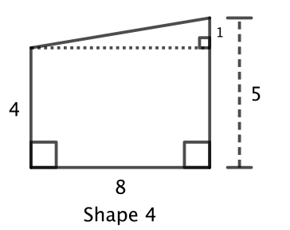
The base of the triangle is 8 and the height is \(5 - 4 = 1\), so the area of the triangle is \(\frac{8\times 1}{2} = 4\). The rectangle has the dimensions 4 by 8, so area \(4\times 8 = 32\).
Therefore, the area of Shape 4 is \(4 + 32 = 36\mbox{ cm}^2\).
Solution 2: Divide the shape into two triangles, as shown.
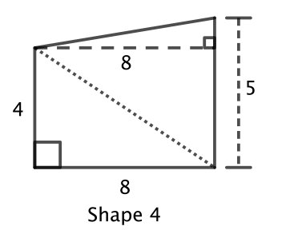
The lower triangle has a base of 8 and a height of 4, so the area of the triangle is \(\frac{8\times 4}{2} = 16\). The upper triangle has a base of 5 and a height of 8, so the area of the triangle is \(\frac{5\times 8}{2} = 20\). Therefore, the area of Shape 4 is \(16 + 20 = 36\mbox{ cm}^2\).